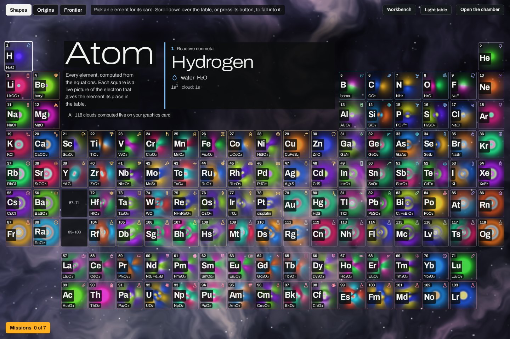
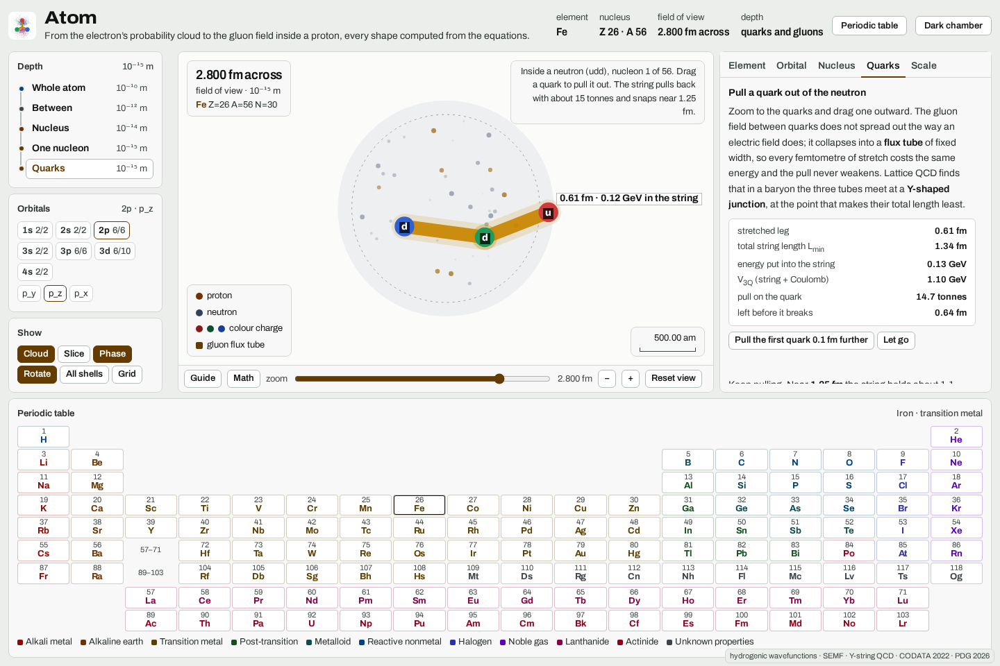

Atom
Every element, computed from the equations. Each square is a live picture of the electron that gives the element its place in the table.
Pick an element, then scroll to fall into it: the cloud, its light, its nucleus, a proton, and the quarks.
Swipe the table sideways for all 18 columns.
Iron’s electrons
The color is the wave’s phase. In a single state it only turns in place, faster where the electron is more tightly bound, and the shape never moves. Opposite colors are opposite signs, and that decides whether two atoms’ clouds add up into a bond or cancel.
Drag the stage to turn it.
Iron’s light is a fingerprint
Almost nothing is there
99.999 999 999 99 % of an iron atom’s volume is empty space.
A force you never feel
Per nucleon that binding peaks near iron and nickel. Fusing light nuclei climbs the curve from one side and splitting heavy ones climbs it from the other, which is the whole story of starlight and of reactors.
New in 2026: clocks that tick on a transition inside a nucleus. Thorium-229 was first excited by a laser in 2024, and in October 2026 two groups reported working nuclear clocks.
A proton is mostly energy
Keep falling, into one of iron’s 26 protons. Its three quarks, two up and one down, add up to about 9 MeV. The proton weighs 938.27 MeV. The other 99% is the energy of the gluon field and of quarks moving inside a box a femtometer wide.
Its charge radius is 0.84075 fm. The famous proton radius puzzle has largely closed: in 2026 ordinary hydrogen gave 0.8406 fm, matching the muonic measurement.
Now pull a quark out
Grab a quark and drag. The gluon field between quarks doesn’t spread out the way a magnet’s does. It stays a tube, so every femtometer costs the same energy and the pull never weakens.
- Stretched leg
- 0.40 fm
- Energy in the string
- 0.00 GeV
- Pull on the quark
- 14.7 tonnes
- Left before it breaks
- 0.85 fm
Keep pulling. Near 1.25 fm the string holds about 1.1 GeV, more than it costs to make a quark and an antiquark out of the vacuum, so it snaps instead of stretching.
The math
V3Q = −A ħc Σ 1/rij + σ Lmin
σ = 0.90 GeV/fm, the string tension. One GeV per femtometer is 1.602 × 10⁵ newtons, about 16.3 tonnes-force, so this string pulls with 14.7 tonnes, whatever its length. Lmin is the total length of the three legs, which meet at a junction where every angle is 120°. A = 0.137 is the short-range Coulomb-like part.
The potential is the Y-shaped form fitted to lattice quantum chromodynamics (QCD) by Takahashi et al. (2001, 2002). The 1.25 fm breaking distance comes from a quark–antiquark string in lattice QCD (Bali et al., 2005), computed with sea quarks heavier than real ones; using it for one leg of a proton is an approximation. What the vacuum makes when the string breaks follows from conservation alone. In 2025 this string breaking was watched directly in quantum simulators running simplified versions of the theory.
What nobody knows yet
Below 10⁻¹⁸ m nobody has seen anything: electrons and quarks are still points. The open questions aren’t about smaller pieces, they’re about why the pieces behave as they do. Each is labeled with where it stands.
- Open
Why can’t a quark ever escape?
Computers reproduce confinement, but nobody has proved the theory requires it. Doing so, the Yang–Mills mass gap, is one of the seven Millennium Prize problems.
- Open
Where does the proton’s spin come from?
Quark spins supply only about 30%. The Electron-Ion Collider, now being built in Brookhaven’s old collider tunnel, should settle the rest in the mid-2030s.
- Claim
Is there a particle made only of glue?
In 2026 the BESIII experiment reported that X(2370) is mostly a glueball. One experiment’s reading, not yet confirmed by anyone else.
- Unresolved
How long does a free neutron live?
877.8 seconds in a bottle, 887.7 in a beam. Ten seconds apart, about four standard deviations, and a new beam method now sides with the bottles.
- Open
Why does the strong force respect mirrors?
The theory allows the neutron to be lopsided, and it measures perfectly round to one part in ten billion. That is the strong CP problem; a particle called the axion is one proposed answer.
- Open
Why is there matter at all?
The Big Bang should have made equal amounts of matter and antimatter. Antihydrogen falls down like hydrogen (2023), and the missing asymmetry is still missing.
- New
A clock inside a nucleus
Thorium-229’s nuclear transition was laser-excited in 2024, and the first nuclear clocks were reported in October 2026.
- Settled
Two famous anomalies, closed
The muon’s magnetism now agrees with theory (2025), and hydrogen settled the proton’s radius at 0.84 fm (2026).
Build it yourself
Three things the people building the future work on every day, computed live: light a fusion reaction, make a chemical bond, and design a battery. Every number comes from measured data or a textbook formula, and each bench says which.
Take it with you
The app opens on the same table and goes deeper: every orbital of every element, the nuclear shell model, decay chains, and a guided tour. It is a single file of HTML, CSS and JavaScript: no network access, no tracking, nothing to install. Run it as a Mac app or open it in any modern browser.


Runs on Apple silicon and Intel Macs with macOS 12 or later. Unless a release says it is notarized by Apple, macOS asks you to approve it once: try to open it, then choose Open Anyway in System Settings, under Privacy & Security. Each release lists its SHA-256 checksum.